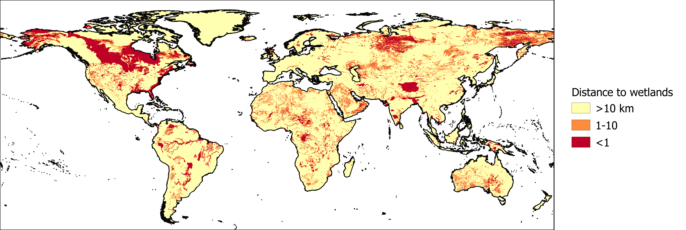

Wetlands are sensitive ecosystems that play an important role in water purification, habitat provision and more. There is a strong link between groundwater and wetland areas, as wetlands can be fed by groundwater or act as a source of groundwater recharge. Groundwater abstraction near wetlands can affect the interaction between surface water and groundwater, and could for example cause wetlands to disappear. The Global Lakes and Wetlands Database was used to map wetland areas. We assigned risk categories based on the distance from these wetland areas.

The distance to wetland areas divided into low (yellow), medium, and high (red) risk categories.
Reference:
Lehner, B., & Döll, P. (2004). Development and validation of a global database of lakes, reservoirs and wetlands. Journal of Hydrology, 296(1–4), 1–22. https://doi.org/10.1016/j.jhydrol.2004.03.028